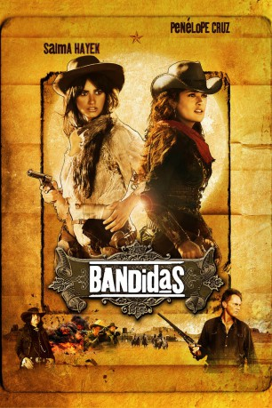
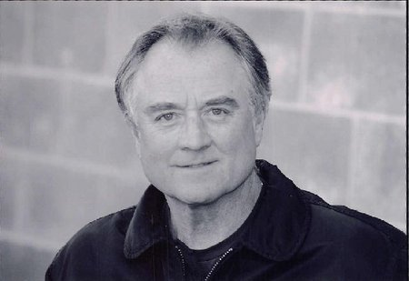
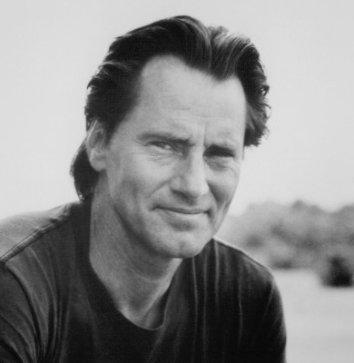
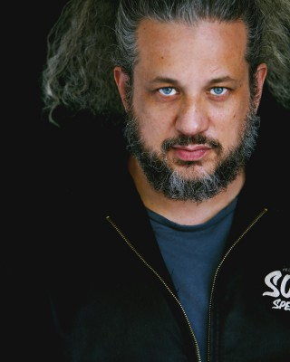

#1648 Bandidas
 
 IMDB-Wertung: 5.7 / 10
IMDB-Wertung: 5.7 / 10  Metascore: 0
Metascore: 0 
Mexiko, 1880: Eigentlich könnten Bankierstochter Sara und Bauerntochter Maria unterschiedlicher nicht sein. Doch als der skrupellose Tyler Jackson im Auftrag der New Yorker Bank and Trust den Weg für den Bau der Eisenbahn durch Angst, Gewalt und Mord freimachen will, werden sie zu Schicksalsgenossinnen. Mit tatkräftiger Unterstützung des alten Ganoven Bill Buck wachsen die beiden zu einem gefürchteten Bankräuberduo heran und rauben als weibliche Robin Hoods Geld für die geknechtete Bevölkerung. Der einfältige Ermittler Quentin soll die beiden Bandidas überführen, verliert aber angesichts der attraktiven Damen bald den Kopf und den Überblick. Verführung statt Überführung heißt von nun an die Devise, denn im wilden Westen sind nicht nur die Patronen scharf!
Jahr: 2006
Dauer: 93 Minuten
FSK: 12
Land: Frankreich Studio: Buena Vista InternationalTonspuren: DTS - ,
Untertitel:
Auflösung: 1080p (1920x816) Größe: 6000 MB
Genre: Action, Komödie, Krimi, Western
Regisseur: Joachim Rønning, Espen Sandberg
Drehbuch: Luc Besson, Robert Mark Kamen
Soundtrack: Éric Serra
Darsteller:
 Penélope Cruz als Maria Alvarez
Penélope Cruz als Maria Alvarez Salma Hayek als Sara Sandoval
Salma Hayek als Sara Sandoval Steve Zahn als Quentin
Steve Zahn als Quentin Dwight Yoakam als Tyler Jackson
Dwight Yoakam als Tyler Jackson-  Denis Arndt als Ashe
-  Sam Shepard als Bill Buck
 Gary Carlos Cervantes als Pedro
Gary Carlos Cervantes als Pedro-  Joseph D. Reitman als Regulator 2
- Daya Fernandez als Cleaning Lady
- Luis Koellar als Maitre D , uncredited
- Audra Blaser als Clarissa Ashe
- Ismael 'East' Carlo als Don Diego
- José María Negri als Padre Pablo
- Lenny Zundel als Bernardo
- Edgar Vivar als Expl. Bank Manager
- Ernesto Gómez Cruz als Brujo
- Filiberto Estrella als Midget
- Yomo Tlazotlalli als Gordo
- Humberto Elizondo als Governor
- Justo Martínez als Cable Bank Manager
- Ana Ofelia Murguía als Consuelo
- Luis Fernando Orozco als Sheriff
- Julian Sedgwick als Regulator 1
- Karl Braun als Regulator 3
- Terrence Stickman als Gate Keeper 1
- Pedro Gamez als Old Peasant
- Rodolfo Sean als Regulator
- Edgar Tebar als Regulator
- Pascal Greub als Regulator
- Vicente Torres als Regulator
- Eric Prats als Regulator
- Sergio Gonzalez als Regulator
- Armando Alarcon als Regulator
- Eduardo Karam als Regulator
- Christian Arrieta als Regulator
- Ernesto Miyares als Regulator
- Eduardo Corral als Regulator on roof
- Israel Gomez als Regulator with banjo
- Alain Pitrel als Deceased, wo man
- Florentino Silva Torres als Gate Keeper #2
- Carlos Palacios als Little Man 40's
- Andrea González als 100 years old Secretary
- Ofelia Herrera als 100 years old Secretary
- Alejandro Campa als Filly's owner #1
- Guillermo Panuco als Filly's owner
- Jorge Ramirez als Filly's owner #2
- Ricardo Arjona als Waiting Businessman
- Elena Gonzalez als Chief Secretary
- Constantino Blanco als Cave Musician #1
- Manuel Ruiz als Cave Musician #2
Datei: X:\HD-Western-2000-2015\Bandidas (2006, FSK12, 1920x816).mkv seit 30.07.2015
Festplatte: HD Eastern+Western
 Es gibt insgesamt 61 Filme in der Gruppe 'HD-Western-2000-2015'
Es gibt insgesamt 61 Filme in der Gruppe 'HD-Western-2000-2015'